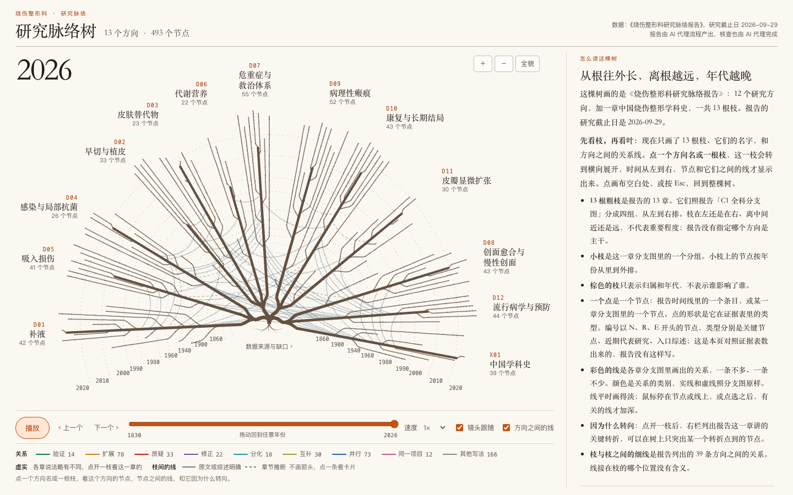
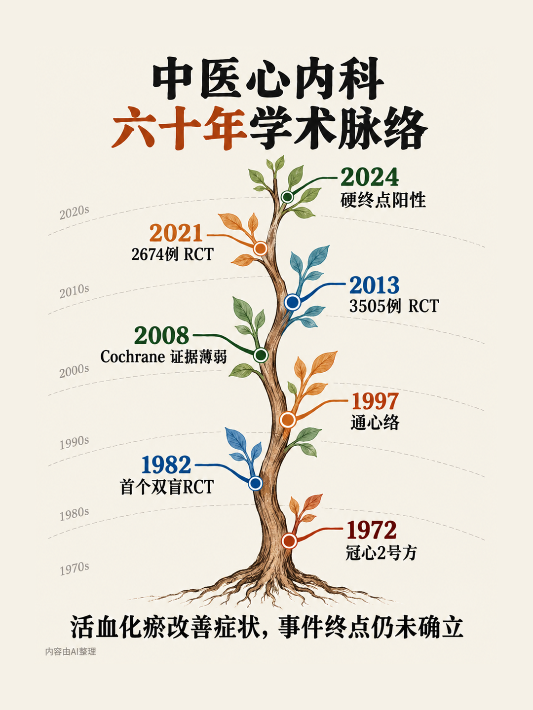

研究脉络
科室研究脉络
给临床医生和研究者看的学科研究地图。每个研究方向从哪里起步，为什么转向，近五年在研究什么。
烧伤整形科研究脉络树
13 根枝是报告的 13 章，离根越远年代越晚。点一根枝，看节点和它们之间的关系；可以按年代播放。

解说视频：休克与液体复苏
75 秒，讲这一根枝怎样随年代长出来。有解说，请开声音。配音是 AI 合成的。
中医心内科研究脉络树
13 根枝对应报告的 13 章（12 个研究方向，另加中国中医心内科学科史），离根越远年代越晚。点一根枝，看节点和它们之间的关系；可以按年代播放。

解说视频：活血化瘀治冠心病
81 秒，讲 1972 年的一张复方怎样把最粗的这根枝带上了随机双盲试验这条路。有解说，请开声音。配音是 AI 合成的。
报告全文
烧伤整形科和精神科两份报告的正文、证据表和来源对照表，都在 GitHub 仓库里。
报告由 AI 代理流程产出，核查也由 AI 代理完成，仓库里没有临床专家审定的记录。它们不是系统综述，不构成诊疗建议。树上画的是报告的一部分，说明见仓库里烧伤整形科的 README。内容以 CC BY 4.0 许可公开，视频的背景音乐除外。